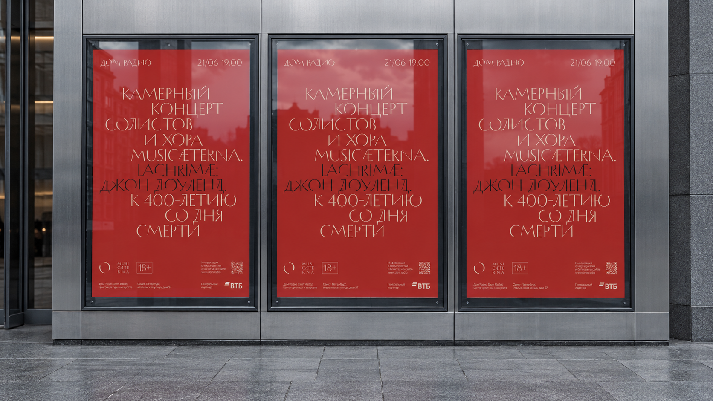

Реальная афиша дизайнера · исходный A4
Предложение для Дома Радио
Одно событие.
Весь комплект.
Дизайнер готовит комплект.
Система берёт на себя
повторную вёрстку.
Команда проверяет результат.

Задача команды
Новая дата —
правка всего комплекта.
У одного события много носителей: от городской афиши до анонса в телефоне. Каждый нужно сверстать, проверить и обновить при изменениях.
Предлагаем сохранить решения дизайнера в системе. Графический дизайнер сможет собирать и проверять комплекты, затем передавать их пиар-специалисту и продюсеру на проверку.
Меньше повторной вёрсткиОдна карточка событияОбщие правила айдентики
У каждого носителя
своя композиция.
Один концерт — шесть способов его увидеть.
Нажмите на пример, чтобы рассмотреть детали.
Показано 6 носителей
Сгенерированный эскиз · условная лента
Исходная афиша в концепте экрана · без обрезки
Сгенерированный эскиз · новая композиция
Концепт размещения · не действующий сайт
Сгенерированный мокап · не реальный фасад
Идея будущего инструмента
Информация меняется.
Характер остаётся.
Дизайнер задаёт правила композиции.
Графический дизайнер заполняет карточку события.
Система собирает согласованный комплект.
Дата, название, участники — общие для всех носителей. Для каждой пропорции — своя вёрстка и проверка.
Предлагаемый сценарий
Четыре шага
от события до выпуска.
Рабочее место графического дизайнера.
Для команды Дома Радио.
- 01
Выбрать событие
Создать новую карточку. Выбрать тип: концерт, лекция или другой согласованный сценарий.
- 02
Заполнить данные
Указать название, дату, площадку, участников. Добавить изображения и партнёров.
- 03
Проверить комплект
Посмотреть все форматы рядом. Проверить текст, композицию и предупреждения.
- 04
Передать на проверку
Выгрузить проверенные макеты. Передать комплект пиар-специалисту и продюсеру; внести согласованные правки.
Пример карточки · не форма ввода
- Событие
- Lachrimae
- Дата и время
- 21 июня / 19:00
- Участники
- Солисты и хор musicAeterna
- Площадка
- Дом Радио
Одна правка вместо серии повторений
Изменить время
в одном месте.
После правки карточки система должна пересобрать связанные макеты. Дизайнер проверит обновлённые превью и передаст новую версию команде.
Согласуем, какие поля обязательны для каждого типа события и какие блоки можно скрыть.
Направление развития после пилота
Не только афиши.
Другие задачи той же команды.
Карточка события
Название, дата, участники и площадка. На выходе — афиши, баннеры и анонсы для цифровых каналов. Комплект обновляется вместе с событием.
Карточка сотрудника
Например, имя, роль и контакты. На выходе — визитки и бейджи. Повод для выпуска — новый сотрудник или изменение данных; состав полей согласуем.
Сначала выбираем задачу и карточку данных, затем носители. Частота выпуска — отдельный признак. Общими могут быть шрифты, цвета и правила бренда; для визиток и бейджей нужны свои композиции и проверки. Они пока не входят в пилот на одном событии.
Роль дизайнера
Один раз задать правила.
Использовать много раз.
Несколько способов
собрать макет
Сетки, поля, расположение блоков и варианты для разных пропорций.
Сохранённая
иерархия текста
Шрифты, размеры, интервалы, переносы и допустимые пределы изменений.
Понятные границы
самостоятельности
Обязательные знаки, партнёры и эталоны. Сложные случаи — на проверку до выпуска.
С инструментом работает графический дизайнер: собирает, проверяет и выводит макеты. В команду Дома Радио также входят продюсер, пиар-специалист и SMM-специалист. После проверки дизайнер передаёт комплект пиару и продюсеру. Порядок дальнейшего согласования определим с командой.
От афиши к правилам
Что именно
мы сохраняем.
Разбор реального макета.
Наблюдения и гипотезы для проверки.
ABC
Бренд и дата имеют своё место
В примере они стоят на одной линии. Для новых пропорций нужно определить поля, выравнивание и предел длины даты.
Иерархия важнее простого масштаба
Размер, переносы и чередование светлого и тёмного текста создают характер. Для узкого формата понадобится новая композиция, а не сжатие афиши.
Служебные элементы — часть макета
Возрастная отметка, адрес, партнёры и ссылка требуют места. Их состав и минимальную читаемость согласуем отдельно.
По одному примеру нельзя вывести все правила бренда. Максим проверит гипотезы на серии афиш; затем закрепим разрешённые варианты и исключения.
Работающий технический образец
Поменяйте данные.
Получите два SVG.
Компоновка пересчитывается в браузере.
Скачивается тот же макет, что в превью.
Квадрат / 1080 × 1080Скачать SVG ↓
Баннер / 1440 × 480Скачать SVG ↓
Это проверка механики: две заданные композиции, текст и векторный фон. Используется временный Arial. RGB, без вылетов и фирменных шрифтов — файлы не предназначены для печати.
Проверено в Illustrator 28.1: квадрат открылся с 7 текстовыми объектами, баннер — с 6. Дату изменили на 22/06 20:00, сохранили AI и открыли повторно: текст остался редактируемым. Скачать проверенные файлы: квадрат AI ↓ · баннер AI ↓. Проверка относится к этим образцам с Arial. Figma, фирменные шрифты и печать — следующий этап.
Что команда должна получать на выходе
Макет можно
открыть и поправить.
Figma / Illustrator
Редактируемые исходники
Текст, изображения и отдельные объекты. Возможность заменить слово, сдвинуть блок и сохранить правку.
Социальные сети / сайт
Цифровой комплект
Файлы нужных пропорций и размеров для выбранных площадок. Превью перед скачиванием.
Типография
Печатный PDF
Размер, вылеты, цвет и шрифты по заданию конкретной типографии. Отдельная проверка перед выпуском.
Полная редактируемость и печать — проверки пилота. Технический SVG-образец выше проверяет ограниченный сценарий; сгенерированные мокапы показывают визуальное направление.
Поставка и надёжность
Инструмент под работу
небольшой команды.
Предлагаем начать с сайта.
Офлайн — если нужен с первого дня.
Сайт или приложение без интернета?
| Условие | Сайт | Приложение |
|---|---|---|
| Начало работы | Адрес в браузере | Установка на компьютер |
| Командная работа | Единые доступ и версии | Нужен обмен или синхронизация |
| Без сети | Требует отдельного режима | Возможно при локальных ресурсах |
| Сопровождение | Хостинг и обновления | Совместимость с ОС и обновления |
Сам движок отделим от интерфейса. Это позволит менять способ поставки без полной пересборки системы. На старте выбираем один вариант; две версии сразу увеличат объём разработки.
Как сохранять качество со временем?
Фиксировать версии правил и шрифтов. Хранить эталонные макеты. Проверять новые версии на обычных и сложных примерах до обновления.
Сохранять данные и готовые комплекты, делать резервные копии и проверять восстановление. Новые требования площадок и редакторов учитывать в сопровождении. Полное отсутствие поддержки не обещаем.
Что уже известно, а что нужно доказать?
Есть основа для разработки
Реальные афиши и визуальный язык Дома Радио. У Figma и Illustrator есть средства автоматизированной работы с текстом и объектами.
Сквозной процесс ещё не проверен
Пилот должен связать реальные данные, вёрстку, превью, редактирование в обоих редакторах и печать. Технические возможности отдельных компонентов пока не доказывают работу всей системы.
Предлагаем оплачиваемый пилот
Одно событие.
Четыре формата.
Проверяемый результат.
Одна семья правил дизайнера. Реальный комплект: печатная афиша, квадрат, широкий баннер и один новый размер.
Поменяем дату, попробуем длинное название, откроем исходники в Figma и Illustrator. Проверим печатный PDF по заданию типографии.
До старта согласуем
Событие и материалы · четыре носителя · критерии приёмки · стоимость · срок.
Цена и календарный план пока не определены. Зафиксируем их после выбора комплекта и проверки доступных исходников и шрифтов.
Как оценим пользу
Сравним одинаковую работу.
Вручную и с инструментом.
Посчитаем весь цикл: ввод, проверку, исправления и выпуск. Процент экономии появится после замера.
- Время
- Сколько занимает готовый комплект, включая правки и проверку командой.
- Качество
- Соответствуют ли макеты эталонам и требованиям выпуска.
- Редактирование
- Можно ли править текст и объекты в обоих редакторах.
- Работа команды
- Сколько времени дизайнер тратит на подготовку и правки, сколько — команда на проверку комплекта.
Оценка на ваших данных
Сколько повторной работы
в вашем потоке событий?
Считайте активное время дизайнера и команды; ожидание ответа измерим отдельно. Формула: события × форматы × ручные минуты ÷ 60; с инструментом — события × минуты на комплект ÷ 60. Разница часов × стоимость часа − сопровождение. Разработка и стоимость перехода не включены. Экономия времени не обязательно означает сокращение денежных расходов.
Что предъявляем на приёмке
Проверяем весь путь
от карточки до файла.
- Один набор данных создаёт четыре согласованных формата.
- Новая дата появляется во всех файлах после пересборки.
- Длинное название проходит согласованную обработку; текст не пропадает и не обрезается молча.
- Текст и отдельные объекты правятся в согласованных редакторах после повторного открытия.
- Печатный файл проходит проверку по заданию выбранной типографии.
- Полный цикл измерен: работа дизайнера, проверка пиаром и продюсером, исправления и выпуск.
Команда проекта
Алексей Королев
Архитектор
Максим Аксенов
Графический дизайнер
Портфолио и примеры реализованных работ добавим отдельно.
Решение после пилота
Если результат подходит —
расширяем систему на поток событий.
Определяем следующие типы событий, набор форматов и условия сопровождения. Стабильность проверяем на разных примерах, а не на одном удачном макете.
Вернуться к техническому примеруЭто предложение по разработке. Исходная афиша предоставлена дизайнером; квадрат, баннер и городское размещение созданы с помощью ИИ. Они показывают направление. Полный процесс выпуска, работа в обоих редакторах, печать и экономия ещё должны быть подтверждены пилотом.